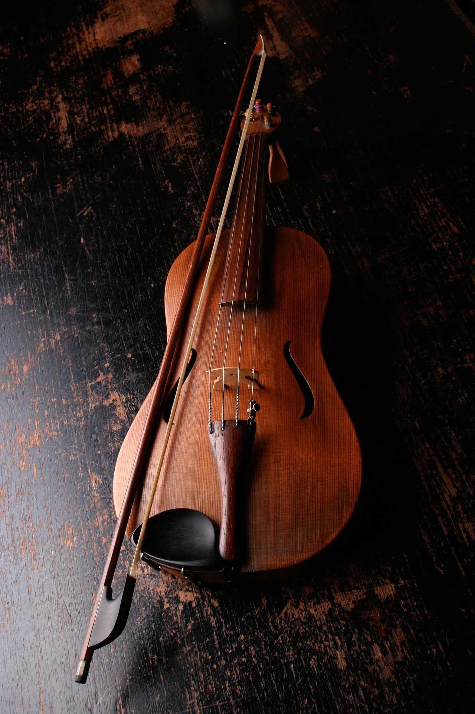

Instrumentos musicais
Instrumentos musicais
Certeza que você ja teve aquele sonho que era o melhor musicista? Aqui teremos informações, cursos e instrumentos para você adquirir

A bateria é um dos instrumentos mais fáceis de ser tocado, porém, o mais dificil de se dominar, pela coordenação motora exigida.
------DICAS------
- Procure um professor de confiança
- pesquise o preço do instrumento desejado
- não fique desesperado
- tenha paciência e força de vontade

O vioino é considerado um instrumento de ser tocado, mas o segredo é ter paciência para evoluir, uns demoram 2 anos enqunto outros muito mais.
No nosso próximo tópico iremos falar sobre instrumentos de sopro, cordas e percussão se tem interesse,vem com a gente